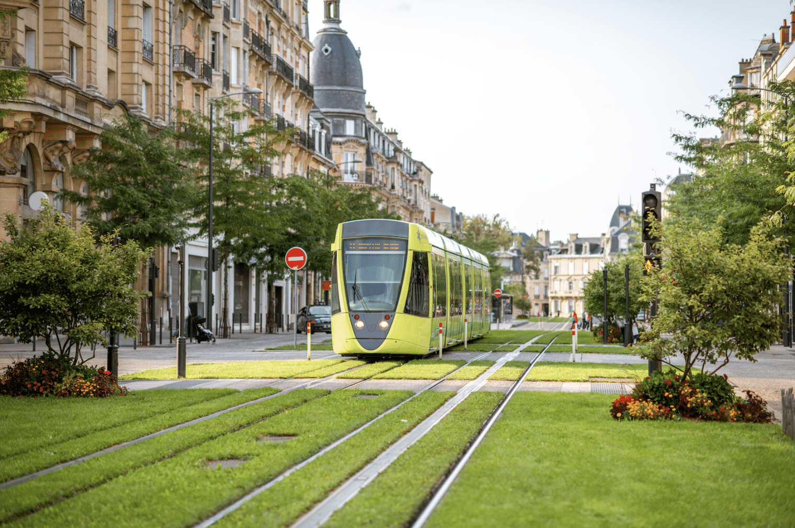

Le développement urbain s’est accéléré de manière spectaculaire au cours des dernières décennies.
Aujourd’hui, plus de la moitié de la population mondiale vit en ville, et cette proportion continue de croître.
Cette urbanisation rapide pose de sérieux défis : surconsommation des ressources, production massive de déchets, pollution de l’air et de l’eau, augmentation des émissions de gaz à effet de serre.
Les villes, bien qu’elles ne couvrent que 3 % de la surface terrestre, sont responsables d’environ 70 % des émissions mondiales de CO₂.

Face à cette réalité, le développement durable devient un impératif.
Il ne s’agit plus seulement de rendre les villes plus vertes, mais de repenser en profondeur leur fonctionnement : mobilité, énergie, habitat, inclusion sociale.
L’enjeu est double : améliorer la qualité de vie des habitants tout en réduisant l’empreinte écologique urbaine.
La transition vers des villes durables est au cœur des stratégies climatiques et environnementales du XXIe siècle.